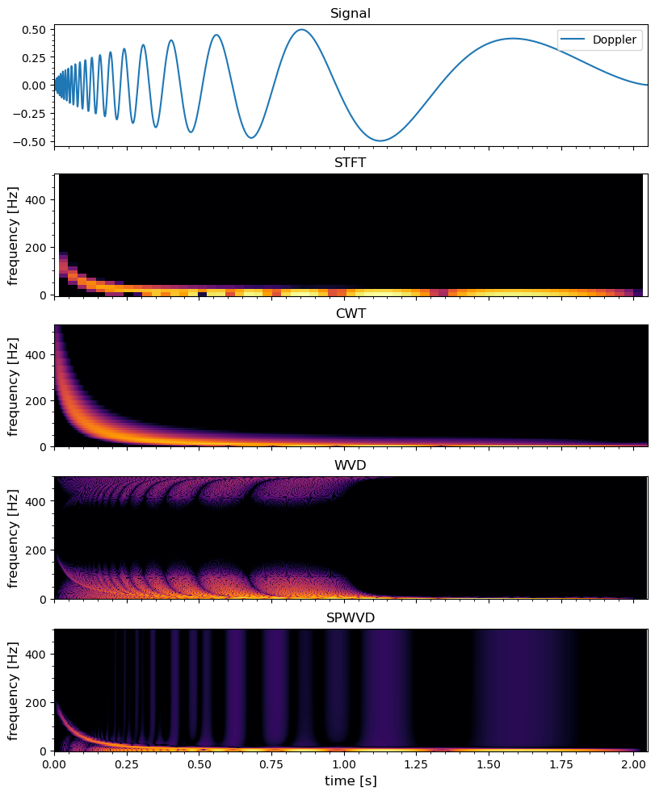
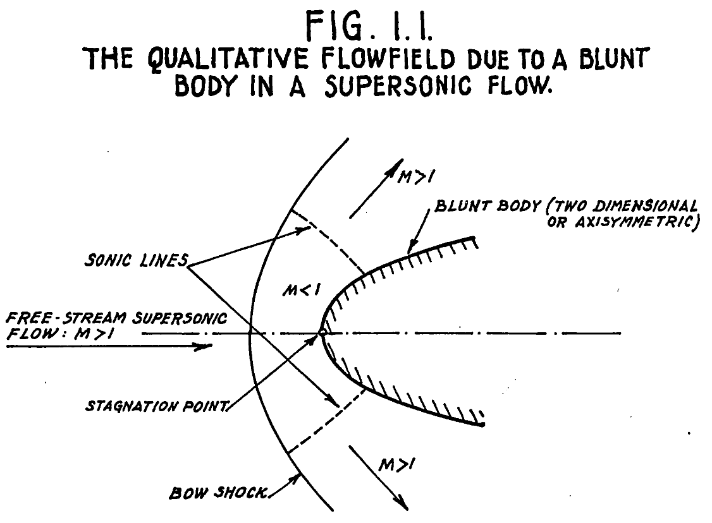
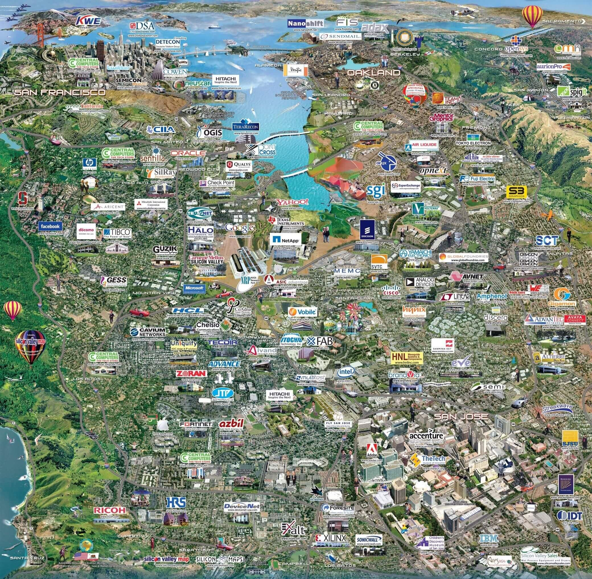

景田日志
About
Links
Publications
resume.pdf
景田日志
Categories
All
(84)
game
(1)
hardware
(7)
language
(1)
latex
(2)
math
(16)
music
(2)
programming
(23)
science
(2)
software
(15)
sports
(3)
travel
(12)
visual
(10)
染发剂
math
老妈需要了解市场上的染发剂是否对人体有损伤。
Aug 19, 2024
Hongyang Zhou
Machine Learning Overview and Examples
math
A computer program is said to learn from experience E with respect to some class of tasks T and performance measure P if its performance at tasks in T, as measured by P…
Aug 10, 2024
Hongyang Zhou
Notes on Large Language Models
math
Bilibili, 大模型微调，LoRA
Jul 25, 2024
Hongyang Zhou
BU篮球半年记
sports
来BU打球半年有余，从一开始的不太适应到现在持续地和各种水平的选手过招，见识了不少人，也见证了自己的成长。常来的球友不少，偶尔光顾的众多，不断地观看和切磋，为了自己热爱的运动挥洒汗水。
Jul 7, 2024
Hongyang Zhou
Basketball Court in Shenzhen
sports
在深圳找个合适的篮球场真是不容易。到了夏天太阳暴晒，无阴凉处五点以前基本上不用考虑。
May 22, 2023
Hongyang Zhou

Comparison of Time-Frequency Transforms
math
Stefan Scholl made a nice comparison between different kinds of time-frequency transforms available: Fourier, Gabor, Morlet or Wigner. The paper on Arxiv is linked here. In…
Mar 17, 2023
Hongyang Zhou
Haskell
programming
那天无意中发现Qusai练手写了一点的Haskell，想着这小子也挺与时俱进的嘛，终于不再整天抱着那Python了。但想想看我对于Haskell的了解也就停留在知道这是一门纯粹的函数式编程语言，觉得不行，还是得多了解一点，于是翻开了Haskell的维基，从最基础的开始学起。看完初级篇，觉得该教程写得非常出色。对于没有编程基础但是懂数学的人，我相信…
Feb 9, 2023
Hongyang Zhou
Profiling
With Intel OneAPI
programming
The Intel profiler VTune and Trace Analyzer are now bundled in the OneAPI toolkit. It works best for C/C++ codes, and decent for Fortran. I have some good time using the GUI…
Feb 9, 2023
Hongyang Zhou
R Notes
programming
R is popular among statisticians and biologists. It is one of the most commonly used languages in data analysis.
Jan 6, 2023
Hongyang Zhou
Nushell
A new type of shell
software
I am glad to see the evolving of modern shells. I enjoy using zsh, but now there are even fancier ones: nushell. It highlights three features:
Sep 25, 2022
Hongyang Zhou
Experiment Design
How to perform trustworthy experiments
science
Any successful experiment requires careful design beforehand. There are systematic methods for ensuring the validity of test results.
Aug 20, 2022
Hongyang Zhou
Matplotlib
software
Matplotlib is a great library, but there are still issues. Over 20 years of development and 3 major version releases, Matplotlib has evolved into a giant library.
May 22, 2022
Hongyang Zhou
Practical Tricks in Signal Processing
math
Select the best smoothing methods that works for your data. Start from simple methods first.
Apr 1, 2022
Hongyang Zhou
Rust
programming
Rust是我一直想了解的语言；唯一的障碍可能就是即使会了一些Rust，短期内看不到哪里能够实际用上。然而学习一门新东西，并不总能立刻看到用途的。
Jan 25, 2022
Hongyang Zhou
瑞典游记
travel
瑞典，北境上的富庶王国。第一次踏上欧洲的领土，竟然是飞越了大西洋，途径冰岛，来到了波罗的海之旁。…
Jan 23, 2022
Hongyang Zhou
The Effectiveness of Modern CPUs
hardware
programming
While watching this Cppcon 2021 video
Jan 23, 2022
Hongyang Zhou
Gravity Wave
math
Make analogies of what you don’t know to what you know.
Jan 10, 2022
Hongyang Zhou
JavaScript
programming
圣诞假期到现在陆陆续续在学习一些JavaScript，期望触类旁通，理解语言的共性和不同。JavaScript作为常年霸榜的编程语言，它的兴起和流行和互联网的发展密不可分。在HTML5的时代，Javascript的地位也依旧没有任何被撼动的趋势，只是出现了更多后继衍生品，比如TypeScript。然而，现代JavaScript的这套骨架被历任程序…
Jan 5, 2022
Hongyang Zhou

Blunt Body Problem in Hydrodynamics
math
At first sight, this seems to be an easy problem: there should be some kind of analytical solution given an ideal shape of the obstacle, say a cylinder in 2D or sphere in…
Dec 22, 2021
Hongyang Zhou
Parallel Programming Concepts
programming
很长时间我都没能准确理解多进程之间的工作关系，特来梳理一下。名词上可能不太准确，但是尽量争取概念上是对的。
Dec 19, 2021
Hongyang Zhou
Development Report For Vlasiator.jl
programming
最近给了一个线上的有关Vlasiator.jl的报告,
Dec 16, 2021
Hongyang Zhou
Kinetic Plasma Simulations
math
昱曦向我推荐了一个Anatoly Spitkovsky的动力学模拟的讲座，
Dec 16, 2021
Hongyang Zhou
Fourier Analysis
math
I hate it when people make simple things complicated, and complicated things impossible.
Nov 18, 2021
Hongyang Zhou
Cross-Wavelet Transform
math
Before we talk about cross-wavelet transform (CWT)
1
, we need to understand wavelet transform (WT). Before we learn wavelet transform, we’d better have a good understanding…
Nov 12, 2021
Hongyang Zhou
Ubuntu Soundtrack
hardware
software
I’ve been using Ubuntu 18 for quite some time now. One thing that is frequently not working properly is the sound output switches. It happens from time to time that if I…
Oct 18, 2021
Hongyang Zhou
Linux Memory
hardware
software
Since I started working with Vlasiator, I have encountered many issues related to memory usage. Now it’s a good time to go over some basics in Linux’s memory management.
Oct 18, 2021
Hongyang Zhou
简报制作
visual
作报告的时候，我们可以尝试加入电影一样的运镜方法。这方面比较亮眼的产品是一款叫Prezi的在线编辑器。 用它做出来的展示品不仅可以实现运镜效果，还可以在视频及视频会议中达成类似动态展示的效果。官方支持里面竟然没有中文，这是有点令人意想不到的。
Oct 15, 2021
Hongyang Zhou
Advanced Python
programming
Good languages stop you from writing stupid codes; bad languages allow you to write more stupid codes. Do not live on ancient code until death! Latest things are not…
Oct 15, 2021
Hongyang Zhou
Refactoring
programming
所谓refactoring，指的是在不改变程序外部功能的情况下对内部结构进行优化调整，
Oct 8, 2021
Hongyang Zhou
Evolution of Programming
programming
In the 20th century as a programmer, you have to learn and write machine code. In the 21st century, it is no longer the case.
Oct 1, 2021
Hongyang Zhou
N-Body Simulation
math
programming
N体问题是力学中的著名基础问题，当\( N \)时的解析解迄今依旧是个问题，仅在某些特殊情况下（比如其中若干个粒子/物体的质量相对极小）有解析解。 N体问题也是粒子模拟中的经典问题，分子动力学的入门例子就是一个势场中粒子的相互作用问题。
Sep 29, 2021
Hongyang Zhou
Green’s Function
math
最早在数理方程的时候接触到格林函数，但一直是懵懵懂懂的。在实际的演算中几乎用不到，于是一直也没真明白。稍微回顾一下。
Sep 24, 2021
Hongyang Zhou
Geometric Algebra
math
“A unified mathematical language for the whole of physics.” - David Hestenes
Sep 17, 2021
Hongyang Zhou
Kalman Filter
math
The first time I’ve heard about Kalman filter is during my exploration of image feature extraction. A MATLAB demo shows how Kalman filter can be used to track passengers in…
Sep 10, 2021
Hongyang Zhou
Debugger
programming
One way of debugging segmentation fault is using GDB. It is such a deep learning curve that no one ever claims he or she fully understands the complete usages. Here is just…
Apr 14, 2021
Hongyang Zhou
Data Transfer
software
scp
: fast, straightforward, speed shown by default.
Apr 7, 2021
Hongyang Zhou
IO Hardwares
hardware
Data access speed is important. In many applications, it is more important to have faster data access speed than higher CPU frequency.
Apr 7, 2021
Hongyang Zhou
语言小论
language
晚上Maxime谈论起法语中的阴性词和阳性词，我问他这有什么规律可寻吗。他说完全没有，就是说多了一个一个记下来就好；如果你用错了也没关系，反正大家都听得懂。而如果是个外国人讲错了就更无所谓了，他说完全不会由于这个去评价这个人如何。这倒是让我思考起语言中语法规范的严谨性和通俗性。其实现在各个国家的语言，细究起来都难言“规范”，总是存在着各式各样的习…
Mar 20, 2021
Hongyang Zhou
Make for a Better World
Towards a robust compilation process
programming
software
There are many different types of make system, among which the most famous one is GNU make.
make
is a tool designed for compiling programs into executables, but it also can…
Mar 12, 2021
Hongyang Zhou
Compilers
programming
Check the post How to Install GCC Compiler on Ubuntu.
Feb 26, 2021
Hongyang Zhou
Chromium Browsers
software
When I bought a new laptop a few months ago, I decided to get a new Win10. Now the default browser on Win10 is Edge, which is built upon Google’s Chromium kernel. Things…
Feb 24, 2021
Hongyang Zhou
Linux Distros and WSL2
software
Being annoyed by the CENTOS linux distro from Redhat, I’ve decided to take a look at some latest distros available. There are several amazing ones already! If I have time, I…
Feb 19, 2021
Hongyang Zhou
Remote Access through SSH
software
Tutorial on proxy jump
Feb 19, 2021
Hongyang Zhou
Command Line Tools
Useful tips and tricks
software
When using properly, command line is often the easiest and fastest way to get tasks done, even though the same thing can be also accomplished in other ways like using…
Feb 11, 2021
Hongyang Zhou
Software Installation
Where we can do better
software
The first thing to tell if one is familiar with codes is whether he or she can compile it. As I move to new group using a completely different code, this is a good chance to…
Nov 14, 2020
Hongyang Zhou
启程赫尔辛基
travel
欧洲人习惯的月日记法和中国一致，但是和美国是反的，估计单这就能闹出不少乱子。咱既然来了欧洲，当然也要入乡随俗了。
Nov 5, 2020
Hongyang Zhou
Cappella
music
如果当时
Oct 18, 2020
Hongyang Zhou
ARM-64 Architecture
Performance Benchmark
hardware
programming
There is probably a ongoing trend of adopting arm chips to commercial and even high performance computing world. I got a chance to try out the new Raspberry Pi 4 with 64-bit…
Sep 10, 2020
Hongyang Zhou
我与数据可视化的那点事儿
visual
学习工作中反复和图像打交道，更能感受到人类的视觉动物本性。五感中，视觉可谓是信息量最大的输入，也同时深入影响着抽象的思维逻辑。我们力图在复杂中寻找简单，高度提炼的数据是关键的一环。
Sep 10, 2020
Hongyang Zhou
Practicing C++
programming
If scientists read coding standards and recommendations like C++ Core Guidelines in the first place, then it is less likely that science codes will be poor in performance…
Sep 2, 2020
Hongyang Zhou
Mac Setup
Software installation and usage on Mac OS
software
Part of this post originates from Dan Welling’s article
Your Mac as a Linux Box
.
Aug 20, 2020
Hongyang Zhou
Passing Arguments
programming
The design of high level program structures is very challenging. One common headache for me is how to pass arguments between function efficiently.
Aug 4, 2020
Hongyang Zhou
Git Version Control
visual
I haven’t considered myself a programmer until very recent years. As a proof of that, 2017/08/28 is the first day I use Git. My experience of using a version control system…
Jul 24, 2020
Hongyang Zhou
Editors
Emacs, Vim, Atom, VSCode, and Typora
software
I have just learned from the Juno team that they are going to shift towards Visual Studio Code in the future. The main decision behind this is that after GitHub was bought…
Jul 24, 2020
Hongyang Zhou
Learning AMReX
programming
AMReX examples are organized in separate folders. This looks nice to me, similar to the building blocks of OpenFOAM.
Jul 18, 2020
Hongyang Zhou
Lyrics Collection
music
在你身边路虽远未疲倦 伴你漫行一段 接一段
Jun 29, 2020
Hongyang Zhou
Colormaps
visual
A colormap is matrix of values between 0 and 1 that define the colors for graphics objects such as surface, image, and patch objects. Colormap is extremely important in…
Jun 10, 2020
Hongyang Zhou
Figure Processing
visual
I have tried an excellent PNG file compressor online: TinyPNG. Usually this can compress a figure by about 60% without lossing visually detectable quality! This should…
Jun 1, 2020
Hongyang Zhou
Wavelet Transform
math
There are already many nice introduction of wavelet transform, like here and the following video. This is my simple note on WT while reading those tutorials.
Jun 1, 2020
Hongyang Zhou
Computer Hardware for Coding
Reprint From BioJulia
programming
hardware
Here is a post for scientists on how to write nice codes given the knowledge of computer hardwares. Very nice.
May 4, 2020
Hongyang Zhou
Internet Connection
software
hardware
Since I moved to the new apartment, the intermittent internet interruption has been bothering me. However, this provides me a good opportunity to learn about basic network…
Apr 19, 2020
Hongyang Zhou
Object Oriented Programming
Personal experiences
programming
Since the 1990s, the idea of object oriented programming is prevailing in the science community. Scientists had started to code in Fortran in the 1960s, and later in C, and…
Apr 15, 2020
Hongyang Zhou
Shared Library
What is it and how to use it
programming
This is a collection of knowledge about shared/dynamic libraries.
Apr 4, 2020
Hongyang Zhou
Magic Angle
The magic behind MRI and reinforced rubber hose
science
What is magic angle, and how does it work??
Mar 3, 2020
Hongyang Zhou
MPM与CG特效
programming
visual
MPM与CG特效
Jan 12, 2020
Hongyang Zhou
任天堂大乱斗
AGU
game
任天堂大乱斗是一款神奇的游戏。2018年底上市的Switch游戏，多达三位数的基础人物、地图场景和总时长28小时的游戏音乐；大小地图分列的单人模式；不同于以往的格斗模式创新——一款有野心，也有完成度的任天堂作品。
Dec 28, 2019
Hongyang Zhou

三番杂记
AGU
travel
在湾区坐了一天车，开了一天车，地方没多大，堵车可一点也不少。我之前错误地估计了三番的地理区划，多待的一天选择住在了市中心，结果三番市里离圣何塞竟有一个小时车程，折腾来去大费周章在了路上。湾区车多，路线选择却仅有两条，上下班的高峰期天天堵车，红色的尾灯连成一片，无可奈何中或许焦虑感顿增——然而也有些许的温情。回三番的路上，夜幕降临，租的车不熟，忘了…
Dec 20, 2019
Hongyang Zhou
Behaviour of BibLaTeX
Details you may neglect
latex
biblatex will display author’s first name to distinguish different authors with the same last name. You may accidentally have the same author but different spelling, however…
Dec 20, 2019
Hongyang Zhou
Using latexdiff
Compare and show the differences between files
software
latex
Compare the differences between files is a tedious task. However, if you pick the right tool, it may become as easy as one line command.
Nov 8, 2019
Hongyang Zhou
Paraview Usage Notes
visual
Paraview is a powerful tool for visualization and postprocessing, but it requires some effort to get familiar with it. The learning curve suddenly becomes steep at some point.
Oct 27, 2019
Hongyang Zhou
Ole Solskjaer Returning to MU
sports
今天我看着曼联的新闻，两眼嗔满了泪水。我认识了你已经十几年，我看到你教练的新闻已经近五年。我知道你会回来的；一定会的。但这样回来，没有比这样回来更好的情景了。
Oct 27, 2019
Hongyang Zhou
Remote Access through X11
XWindow forwarding
visual
When you ssh to a remote server, you may need to open graphic software through x11. Check the following things to avoid the displaying error
X11 forwarding request failed on…
Oct 25, 2019
Hongyang Zhou
Making Videos from Figures
visual
An animation is simply frames of figures. It is pretty helpful to be proficient at generating a set of figures and combining them into a video. However, naively combining…
Oct 25, 2019
Hongyang Zhou
Biostation Retreat
travel
系里组织的第一次博士生的出游活动，一看是临近北密的学校的生物站，时间允许二话不说就去了。五年级的博士生只有我跟毅轩两人，其他都是些年轻的面孔。同届的学生估计大都很忙吧。作为系里五年来第一次的集体出游，真是要给研究生会的同学点个赞。
Sep 15, 2019
Hongyang Zhou
新加坡之行
AOGS初体验
travel
这次出行似乎有点仓促，什么功课都没做就直接收拾行李上了飞机。可能对于语言没有障碍且大不到哪里去的地区没有什么心理负担吧。但我也真的心大，仿佛回到了几十年前人们出行的方式。飞机预计早上六点多降落，七点钟从机场出来，会场也不知道叫啥，酒店也不知道叫啥。会议的议程手册压根儿没看，指甲刀和临时寄物柜的英文也不知道怎么说。这2G网看来要带我走天下了。
Aug 6, 2019
Hongyang Zhou
仙台之行
又是一年MOP
travel
借着到日本开会的机会，我第一次真正走进了这个神奇的国度。在讯息发达和文化融合的今天，称得上陌生的东西不多，但可以思考和观赏的地方也不少。
Jun 22, 2019
Hongyang Zhou
麦迪逊游记
比赛，亦或旅游
travel
Madison离Ann…
Apr 1, 2019
Hongyang Zhou
Introduction to CNN
math
You can watch the video for a nice walk-through. Here is just some notes from that video. A nice interactive playground based on tensorflow can be found here. An…
Jan 25, 2019
Hongyang Zhou
Plotting of Streamlines
visual
The built-in streamline function of Matplotlib/MATLAB is not proper for scientifically visualizing field information.…
Jan 24, 2019
Hongyang Zhou
DC 三番记
travel
第三次来华盛顿了，一开始找路的时候才发现，还是不够了解这座城市。下了地铁找个路南北都能弄反，回忆了半天愣是没想起来曾经住过的宾馆在哪里。直到重新绕着市中心转了一圈，在中国城里曾经吃过的馆子再来一遍，才让过往的记忆浮出水面，重焕光彩。最终才发现，现在住的Marriot，离曾经的Renaissance，不过一百米的距离。我见识过的财政部、国防部、白宫…
Dec 15, 2018
Hongyang Zhou
洛杉矶杂记
ISSS
travel
第一次来洛杉矶，来到了加州大学洛杉矶分校。这时仍是他们的夏季学期，但学校里却依然人潮涌动。来回两遍，我已经对这里的方位烂熟于心。…
Sep 14, 2018
Hongyang Zhou
东游记
从安娜堡到纽约
travel
白雾飞溅成雾，阳光幻化成虹；隆隆落水相伴，偏偏海鸥共舞。
Jul 30, 2018
Hongyang Zhou
科罗拉多杂记
又是一年MOP
travel
用一周，了解一座城。
Jun 20, 2018
Hongyang Zhou
墨西哥杂记
圣诞新年七日谈
travel
我把旅行中零散的记录收集在一起，再额外补充一些，作为17年墨西哥旅行的纪念。感谢泽哥、佳星和颖怡的同行，感谢热情的墨西哥人民。
Jan 1, 2018
Hongyang Zhou
No matching items